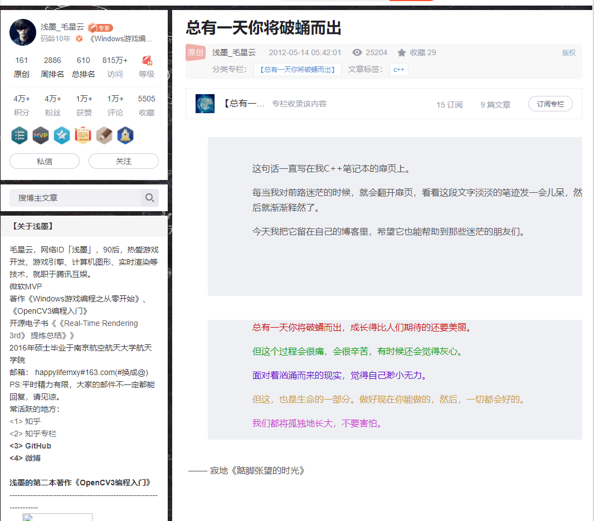
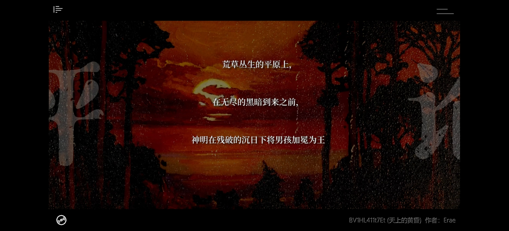

文章
43
标签
21
分类
13
首页
时间轴
标签
分类
友链
关于
ZWN's blog
搜索
首页
时间轴
标签
分类
友链
关于
置顶
发表于
2021-12-15
|
更新于
2022-03-09
|
字数总计:
41
|
阅读时长:
1分钟
|
阅读量:

他走了，但我依然会向前走
我既然决意将如花瓶般的内心高举过头顶，便不会在意它破碎时的呜咽。

文章作者:
ZWN
文章链接:
https://zwn2001.github.io/2021/12/15/%E7%BD%AE%E9%A1%B6/
版权声明:
本博客所有文章除特别声明外，均采用
CC BY-NC-SA 4.0
许可协议。转载请注明来自
ZWN's blog
！
上一篇
后端数据过期的处理策略
下一篇
学线移动例会：git
评论
ZWN
我虽无意逐鹿，却知苍生苦楚
文章
43
标签
21
分类
13
Follow Me
公告
ZWN的新博客站
最新文章
鉴权技术
2022-03-21
学线培训-springboot入门指南与junit单元测试
2022-03-17
Typora白嫖教程
2022-03-15
安卓原生-服务
2022-03-11
安卓原生-广播
2022-03-11
本地搜索
✨ 网站已更新最新版本 👉
点击刷新